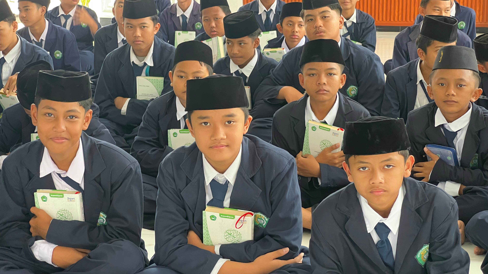

#1. Kegiatan Ekstrakurikuler di YPI Nurul Ilmi
YPI Nurul Ilmi menyediakan berbagai kegiatan ekstrakurikuler untuk mengembangkan potensi dan bakat siswa-siswi kami. Dengan panduan ustadz dan ustadzah yang berpengalaman, setiap siswa dapat menemukan dan mengasah kemampuan mereka di luar kelas.

Berbagai ekstrakurikuler yang tersedia meliputi Japan Club untuk mempelajari bahasa dan budaya Jepang, Volly dan Futsal untuk menyalurkan hobi olahraga, English Club untuk meningkatkan kemampuan berbahasa Inggris, Math Club untuk pecinta matematika, Taekwondo untuk pertahanan diri, Tahfidz Al-Quran untuk menghafal kitab suci, dan Badminton untuk penggemar bulu tangkis.
Setiap ekstrakurikuler diadakan setiap sore hari setelah jam belajar regular berakhir. Dengan demikian, siswa dapat mengoptimalkan waktu mereka untuk belajar sekaligus mengembangkan hobi dan bakat di luar akademis.
Prestasi juga menjadi fokus kami. Siswa-siswa YPI Nurul Ilmi secara rutin mengikuti berbagai kompetisi di tingkat kecamatan hingga kabupaten, membawa pulang penghargaan yang membanggakan.

Ustadz Ahmad Fauzi
Ustadz Ahmad Fauzi adalah Guru Matematika di YPI Nurul Ilmi dengan pengalaman mengajar lebih dari 10 tahun. Beliau aktif mengembangkan ekstrakurikuler Math Club untuk培养学生.
Siti Aminah
Alhamdulillah, anak saya sangat senang mengikuti ekstrakurikuler di YPI Nurul Ilmi. Gurunya sabar dan selalu memotivasi.
Balas
Hendra Wijaya
Math Club di sekolah ini sangat membantu anak saya dalam memahami matematika. Metodenya inovatif dan mudah dipahami.
Balas
Dewi Lestari
Setuju! Anak saya juga mengalami peningkatan signifikan dalam belajar matematika sejak bergabung di Math Club.
Balas
Rudi Hermawan
Program ekstrakurikuler di YPI Nurul Ilmi sangat lengkap. Anak saya mengikuti Taekwondo dan sudah meraih beberapa penghargaan.
Balas